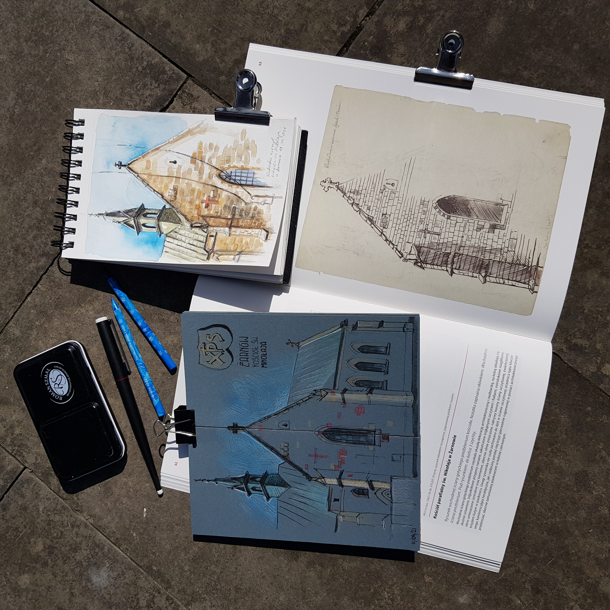
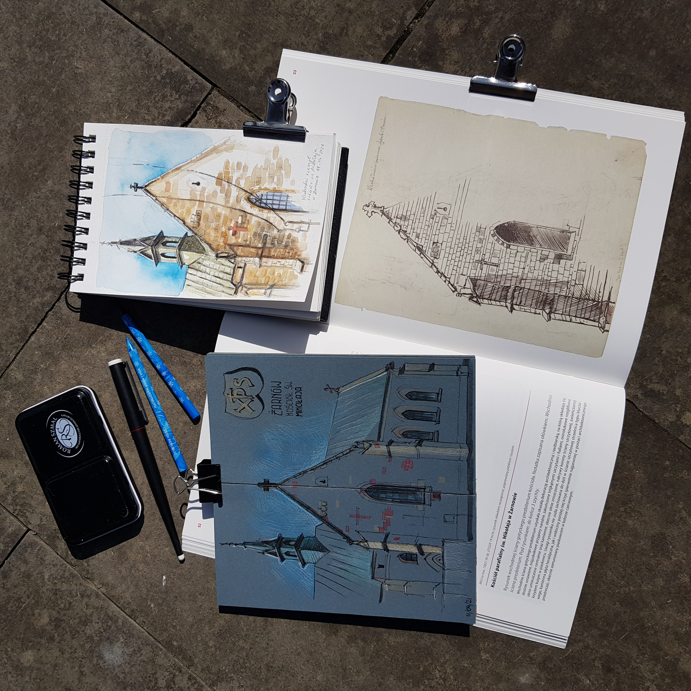

Have you ever tried travelling with a leading topic? Two urban sketchers from Poland, Dora Pindur and Justyna Wojnowska, did just that last year. They took two trips following the footsteps of the Polish artist, Stanisław Wyspiański, painter, playwright, poet, and designer, who created many sketches on location. He lived at the turn of the 19th and 20th centuries, and he is best known for his literary work and paintings made with pastels. In his student days he traveled around the territory of today's Poland with a sketchbook. He documented little-known monuments. He drew architecture, interesting details, sculptures, as well as plans of the buildings. Some of these places and objects have long been lost because of wars, fires, or neglect. Wyspiański's drawings are the only trace of them today. Many of his sketches went missing during the two World Wars that swept through Poland, but some of his on-location drawings from his time at the School of Fine Arts were recently found and released in three publications.
It was those publications that gave Dora and Justyna the idea to follow in Wyspiański’s footsteps. They decided to plan a trip following in his footsteps drawing the places he’d sketched over one hundred years ago. “It would be an amazing opportunity to learn about our national heritage and to visit the lesser-known monuments.”
Their travels focused on the historic southern and south-eastern regions of Poland. They started with a one-day trip in the Spring of 2019 to Opoczno, a town in south-central Poland with a rich history. That left them hungry for more. So, in September, they packed their car with sketchbooks, art materials, hot tea flasks, seating mats and warm sweaters and started off for five days in the southeastern region of Lesser Poland. “We visited several mountain towns, historic churches, monasteries, two defensive manors and the picturesque open-air museum of the Galician Town in Nowy Sącz. We completed our trip in Krakow, where we visited Wyspiański’s tomb. Those five days were amazing - very intense and full of creativity.”
There was “A magical moment by the defensive manor in Szymbark with the mists at sunrise revealing the landscape behind, falling autumn leaves, sunshine and a warm tea in our thermoses.” When they were visiting another manor in Jeżów, “We met the caretaker also by accident actually - he was just walking outside with his dog when we arrived and asked him if we could sketch on the private property.” He generously obliged and even let them in to the interior, a special privilege since it’s not normally open to the public.
Their biggest problem of this trip? Not enough time. “…even though we were drawing from morning to evening (sometimes even instead of meals), we still didn't manage to see everything we wanted. We have to go back there again!”
Dora and Justyna decided to continue their project next year and share it with a bigger group of urban sketchers. “We are already planning workshops, lectures, sketch-walks, sightseeing trips, and an exhibition, so stay tuned and consider your next holidays in Poland!”
 
